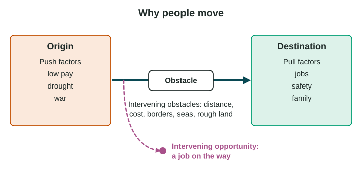
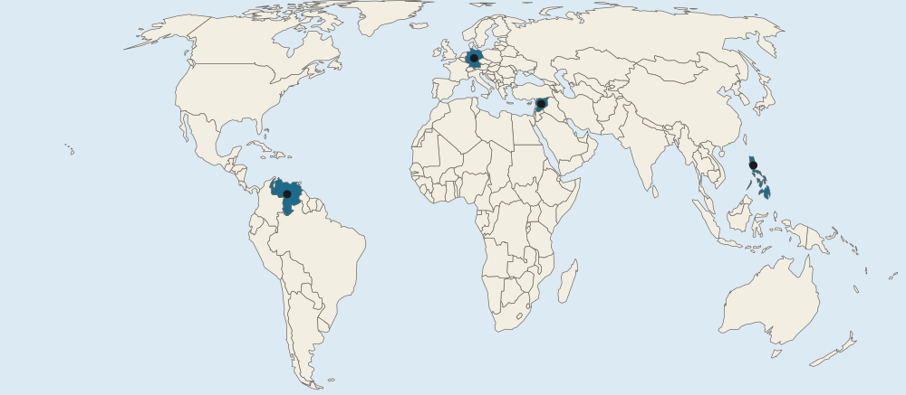

Causes of Migration
People migrate because of push factors at the place they leave and pull factors at the place they go, while intervening obstacles and opportunities along the way can block or redirect them.
Part 1 · Hook
Why this matters
Part 2 · Prerequisite check
Quick check before you start
1. Ravenstein found that most migrants move how far?
- A short distance
- To another continent
- Across an ocean
- Over a mountain range
Show the answer
Most migrants in his data moved only a short distance.
- Correct: A short distance:
- To another continent:
- Across an ocean:
- Over a mountain range:
2. Which kind of policy sets who may move into a country?
- Immigration policy
- Pronatalist policy
- Antinatalist policy
- Family planning
Show the answer
An immigration policy sets who may enter, how many and for how long.
- Correct: Immigration policy:
- Pronatalist policy:
- Antinatalist policy:
- Family planning:
Part 3 · See it
See it first

Part 4 · Step by step
How it works, step by step
- Problems at home, such as drought, low pay or warpush factors make people want to leave
- Attractions elsewhere, such as jobs, safety or familypull factors draw people to a destination
- Costs, borders or rough land lie betweenintervening obstacles slow or stop the move
- A chance to work or settle appears on the wayan intervening opportunity may make a migrant stop short
Part 5 · Key ideas
Key ideas
- Migration is a long-term move to a new place to live. Push factors drive people from the origin; pull factors draw them to the destination.
- Intervening obstacles (cost, distance, borders, seas, rainforest) make a move harder; intervening opportunities (a job on the way) may stop it short.
- Causes are cultural, demographic, economic, environmental and political, and most moves have more than one.
- Name the kind of cause and the place: "Drought in the Sahel (environmental push)" earns credit; "bad conditions" does not.
Part 6 · Misconception
A common mistake
The wrong idea: Jobs in the city are a push factor because they push people to move.
What actually happens: Factors are named by where they are. Jobs at the destination pull people in. Push factors are problems at the origin, such as low pay or drought at home.
Part 7 · Check yourself
Check yourself
Exam-style questions. Anything you miss goes into your review queue.
Text
A migrant describes her move (an invented interview)
Invented for practice. Interview with Ana, 24, who moved from the Northern Hills of Country A to the Capital Region in 2025:
"Two dry summers in a row ruined our maize, and the only work left in my village paid very little. My cousin said the factories in the capital were hiring and paid twice as much. The bus ticket cost a month’s pay, so I saved for almost a year. On the way, a hotel in Valley Town offered me a job, but I kept going, because my cousin had a room for me in the capital."
1. Which part of Ana’s story is a push factor?
- Dry summers ruined the maize at home
- Factories in the capital were hiring
- Her cousin had a room for her in the capital
- A hotel in Valley Town offered her a job
Show the answer
Push factors are at the place a migrant leaves: here, crops ruined by drought and poorly paid work in the village.
- Correct: Dry summers ruined the maize at home: Right: a push factor is a problem at the origin that pushes people out.
- Factories in the capital were hiring: that is a pull factor: an attraction at the destination.
- Her cousin had a room for her in the capital: that is a pull factor at the destination.
- A hotel in Valley Town offered her a job: that is an intervening opportunity, found on the way.
2. Which part of the story is an intervening obstacle?
- The hotel in Valley Town offered her a job
- The bus ticket cost a month’s pay
- The village work paid very little
- Factory pay in the capital was twice as high
Show the answer
An intervening obstacle is something between the origin and the destination that makes the move harder: cost, distance, a border, a mountain or a sea.
- The hotel in Valley Town offered her a job: that is an intervening opportunity, not an obstacle.
- Correct: The bus ticket cost a month’s pay: Right: the cost of the trip made the move harder and slowed it.
- The village work paid very little: that is a push factor at the origin.
- Factory pay in the capital was twice as high: that is a pull factor.
3. What is the job offer in Valley Town an example of?
- An intervening obstacle
- A push factor at her origin
- An intervening opportunity
- A pull factor at her destination
Show the answer
An intervening opportunity is an attraction along the way that may lead a migrant to stop short of the planned destination. Ana chose to keep going.
- An intervening obstacle: an obstacle makes a move harder; a job offer is an opportunity.
- A push factor at her origin: Valley Town is on the way, not at her origin.
- Correct: An intervening opportunity: Right: it is a chance to stop and settle before reaching the planned destination.
- A pull factor at her destination: her destination is the capital, not Valley Town.
Map
Four countries on a world map

- Countries in the questions
4. Millions of people left the country marked A after a civil war began there in 2011. What kind of push factor was most important?
- Political: war and violence
- Environmental: rising sea level along the coast
- Cultural: a wish to learn another language abroad
- Demographic: too few young people at home
Show the answer
The country marked A is Syria. The war that began in 2011 drove millions from their homes, many into Türkiye, Lebanon, Jordan and Europe. That is a political push factor.
- Correct: Political: war and violence: Right: conflict is a political cause of migration.
- Environmental: rising sea level along the coast: the main cause of the moves from Syria after 2011 was the war.
- Cultural: a wish to learn another language abroad: the case is about war, not study or language.
- Demographic: too few young people at home: a shortage of young people does not push people out.
5. Which pair correctly matches a pull factor with a push factor?
- Pull: safe streets abroad; push: high crime at home
- Pull: drought at home; push: jobs in the city
- Pull: war at home; push: low rents abroad
- Pull: low wages at home; push: good schools abroad
Show the answer
Push factors are at the origin and drive people out. Pull factors are at the destination and draw people in. Many factors are the same idea seen from the two ends.
- Correct: Pull: safe streets abroad; push: high crime at home: Right: pull attracts to the destination; push drives from the origin.
- Pull: drought at home; push: jobs in the city: this reverses them.
- Pull: war at home; push: low rents abroad: war at home is a push factor.
- Pull: low wages at home; push: good schools abroad: low wages at home push; good schools abroad pull.
6. A student plans to move from a small town to a large city. Which are pull factors? Select all that apply.
- Better-paid jobs in the city
- A university she wants to attend
- The closing of the last factory in her town
- The high cost of rent in the city
- A long, costly trip to reach the city
Show the answer
Pull factors draw people to a destination: jobs, schools, safety, family. Problems at home push; costs and barriers between are obstacles.
- Correct: Better-paid jobs in the city: Right: an attraction at the destination.
- Correct: A university she wants to attend: Right: an attraction at the destination.
- The closing of the last factory in her town: That is a push factor at the origin.
- The high cost of rent in the city: That is an obstacle or a drawback, not a pull.
- A long, costly trip to reach the city: That is an intervening obstacle.
Part 8 · Summary
Summary
Part 9 · Up next
What comes next
Part 10 · Connections